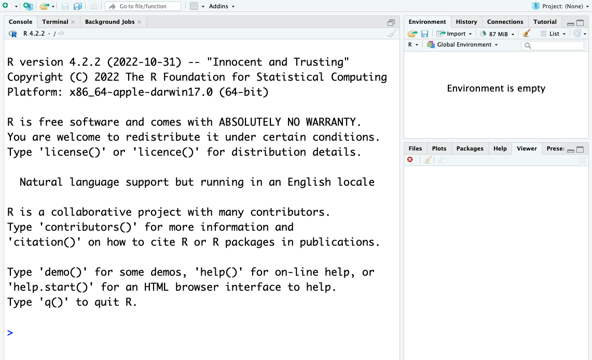
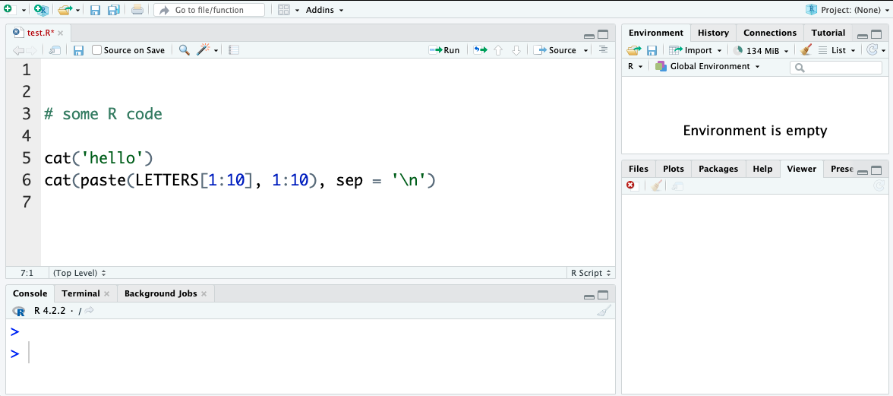
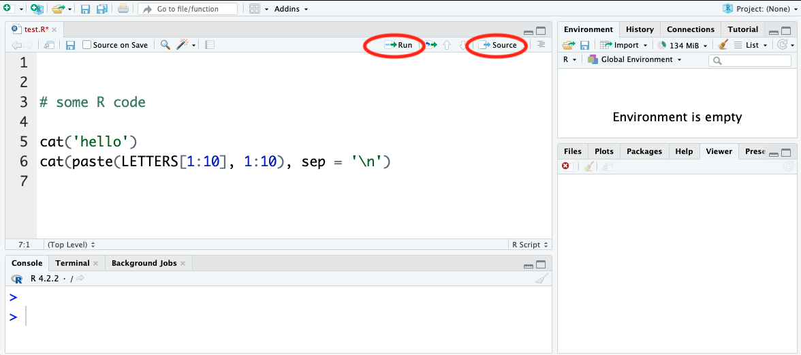
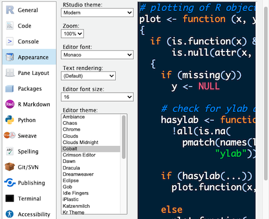
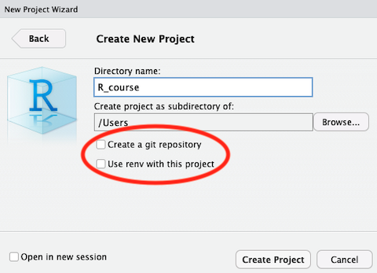

?paste
?getwdIntroduction to Rstudio
Using RStudio
We’ll be using RStudio: a free, open source R Integrated Development Environment (IDE). It provides a built-in editor, works on all platforms (including on servers) and provides many advantages such as integration with version control and project management.
Basic Layout
When you open RStudio for the first time, you will be greeted by three panels:
- The interactive R console/Terminal/… (entire left)
- Environment/History/Connections/… (tabbed in upper right)
- Files/Plots/Packages/Help/Viewer/… (tabbed in lower right).

Opening/creating a File opens a 4th editor panel.
TASK: Create a new file for R coding
File > New File > R script Save the file as something like test.R in a suitable location e.g. R_course (there is a new directory option in the save file dialog)

TASK: update file:
Add a couple of lines of example code to the file, for instance you could use: {r eval = FALSE} cat('hello') cat(paste(LETTERS[1:10], 1:10), sep = '\n') and save. (+ If you want information about any commands note them to use with the R help options later)
## Note the Run and Source buttons above the editor pane**

Run: runs the particular code selected or the line where the cursor is resting.
Source: runs the whole file.
TASK:
Try using the Run and Source buttons and see how the code behaves when using Run with different text selections or cursor locations
RStudio Themes
There are many ways to configure RStudio, including text size, layout and colour schemes.

TASK:
Take a look at the RStudio Preferences/Settings Edit > Preferences… Or depending on the RStudio version Tools > Global Options In particular look at the Appearance settings Change the ‘Editor theme:’ to a dark theme (Cobalt is a good example). Pick a theme to use or return to the default (Textmate) and go OK.
Using R Packages (CRAN)
It is possible to add functions to R by writing them yourself, but a major reason for the popularity of R are the many freely available packages for a multitude of computational tasks. There are >21,000 packages available from CRAN alone (the Comprehensive R Archive Network). So for any particular task there is a high probability robust pre-existing code exists.
R has command driven functionality for managing packages/libraries:
- You can see what packages are installed by typing
installed.packages() - You can install packages by typing
install.packages("package_name"), where package_name is the package name, in quotes. - You can update installed packages by typing
update.packages() - You can remove a package with
remove.packages("packagename") - You can make a package available for use with
library(package_name)(typically placed at the top of your R script - note: quotes are optional here).
RStudio also allows package management via the GUI
Packages can be viewed, loaded, and detached in the Packages tab of the lower right panel in RStudio. Clicking on this tab will display all of the installed packages with a checkbox next to them. If the box next to a package name is checked, the package is loaded and if it is empty, the package is not loaded. Click an empty box to load that package and click a checked box to detach that package. Packages can be installed and updated from the Package tab with the Install and Update buttons at the top of the tab.
Or use Tools > install Packages…
TASK:
Install a package either from the console install.packages('gapminder') Or via the RStudio menus Tools > Install Packages… enter ‘gapminder’ and click install
Note: gapminder is a small package that provides some data that will be used later.**
If appropriate your trainer may ask you to install other packages like the dplyr package that we will be using extensively
Other Package sources
Packages can also be obtained from other sources such as:
- Github
- Package Archive files (.tar.gz/.zip)
- Bioconductor
Some specialist or very new packages may be obtained directly from their authors and require different installation processes e.g: from github using the devtools package devtools::install_github("DeveloperName/PackageName") https://cran.r-project.org/web/packages/githubinstall/vignettes/githubinstall.html
Or if a suitable package archive file is provided, using install.packages() but with the archive file path (which can be a URL) and the type = "source" parameter.
For those working in the areas of biological science the Bioconductor package repository may be important.
It is a source of 2100+ packages of particular interest to bioscientists and bioinformaticians https://www.bioconductor.org/packages.
Setting up Bioconductor packages requires the prior installation of a package called BiocManager which is then used to install the specialist packages (https://bioconductor.org/install/).
Projects with RStudio
One powerful and useful aspect of RStudio is its project management functionality. Projects help keep related scripts, R configurations and data organised together and reduces conflicts and confusion between different sets of work.
If you are creating more than a few small scripts get into the habit of creating a Project for every collection of related scripts and data
If you have already done some work before creating the project use:
File > New Project… > Existing Directory > Create Project From Existing Directory
Or if you are starting things from scratch use:
File > New Project… > New Directory > New Project > Create New Project

Note when creating a new project you are given the options to:
- Create a git repository
- Use renv with this project
These options provide powerful functionality for a project but we will not be covering them further in this introduction, however we recommend looking into their use especially if you end up working with complex or colaborative R coding.
# TASK:
Create a project using the existing Folder and test script saved earlier
## HINT:
File > New Project… > Existing Directory > Create Project From Existing Directory
To open an existing R project in RStudio either use File > Open Project (or related menu options) or use the file browser to get to the directory where it was saved and open the .Rproj file (which should be associated with RStudio). This will open RStudio and start your R session in the project directory. All your data, plots and scripts will now be relative to the project directory and should be redisplayed in the state that the project was closed in. It is a good habit when using projects to use the File > Open/Close Project menu options as you work.
RStudio projects have the added benefit of allowing you to open multiple projects at the same time each using its own project directory. This allows you to keep multiple projects open without them interfering with each other.
Supplementary info:
Code tidying
There are some built in functions for organising code text including:
- Code > Reindent Lines
- Code > Reformat Lines
- Code > Comment/Uncomment
Working Diectory
Using projects should keep you located in the appropriate directory for your work but if needed you can set your directory location using:
Session > Set Working Directory > (several options)
The commands setwd('directory_path') works from the console also note the handy getwd() to display the current working directory can sometimes be helpful.
Finding Help
There are several sources of documentation for R packages on line but RStudio also supplies R package documentation via the search in its Help tab. Whenever you use a new package it is a good idea to take at least a quick look at the description and available parameters.
The package help can also be found by entering ?package_name in the console.
TASK:
look at help documentation for paste and getwd using the console
Hint
Note: If a package is not currently loaded it will be suggested to try ??package_name for a more extensive search
Cheat Sheets
For overviews / command references for particular topics there are some very useful “cheat sheets” available from the help menu.
Help > Cheatsheets
TASK
Take a look at the RStudio IDE Cheat Sheet From the Help menu
Hint
Help > Cheatsheets > RStudio IDE Cheat Sheet
Other Resources
There are many web resources available to help you use R successfully. For general and specific questions about R, Google and Stackoverflow (https://stackoverflow.com) are your friends. Resources such as ChatGTP can be now used to generate or refine code, however in an academic context care should always be taken to understand thoroughly how any code actually works before use.